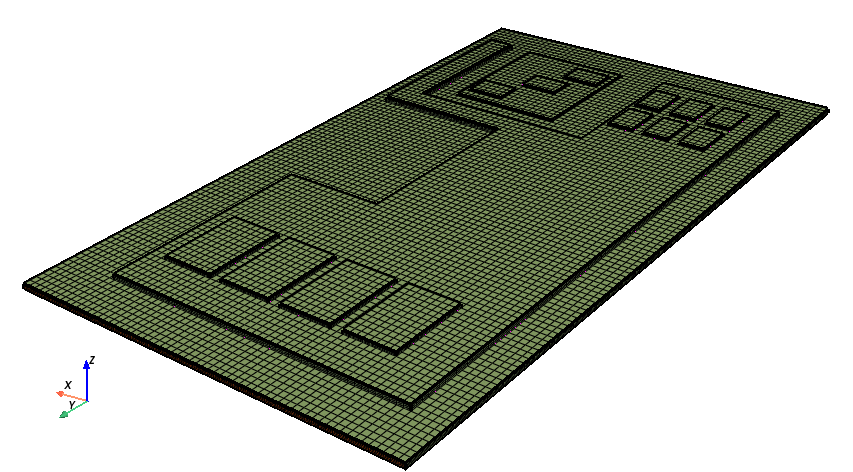
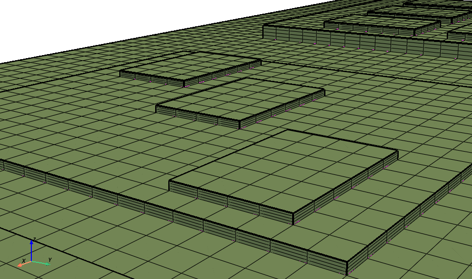

Note
Go to the end to download the full example code
Meshing a generic PCB geometry with multiple hexa layers#
Summary: This example demonstrates how to set the base mesh size and number of layers for each solid in a generic PCB geometry and then generate a mesh.
Objective#
The example uses PyPrimeMesh to discretize a PCB CAD geometry by means of the stacker technology. You can easily set up the mesh size of the base face (xy plane in this example) and the number of mesh layers along the sweep direction (z axis in this example). The CAD edges along the z direction are assigned with a named selection at a CAD level in Ansys Discovery/SpaceClaim.
The following image provides a snapshot of the Discovery tree to help you to understand the model’s
organization. Share topology in Discovery/SpaceClaim guarantees the generation of a conformal mesh
between the solids. Named selections of edges allow you to specify the number of mesh elements to
generate along the sweep direction. To simplify the process and enhance convenience, this example
uses multiple meshing utilities provided in the lucid class.
{kind=link}
The resulting mesh with three layers per solid looks like this:
 {kind=link}
{kind=link}
Procedure#
Import the fundamental libraries that are necessary to run the script.
Launch an Ansys Prime Server instance and instantiate the meshing utilities from the
lucidclass.Define the main mesh parameters, which are the base size and number of layers along the sweep direction.
Import the CAD geometry.
Define the edge sizing along the sweep direction (based on pre-existing edges named selections).
Define the parameters for the volume sweeper.
Set up, generate, and mesh the base face.
Stack the base face along the sweep direction.
Set up the zone naming before the mesh output.
Write a CAS file for use in the Fluent solver.
Exit the PyPrimeMesh session.
Import all necessary modules#
Notice that you must install the PyVista library to be able to run the visualization tools included in this script.
import os
import tempfile
import ansys.meshing.prime as prime
from ansys.meshing.prime.graphics import Graphics
Launch Prime server and instantiate the lucid class#
Launch an instance of Ansys Prime Server.
Connect the PyPrimeMesh client and get the model.
Instantiate meshing utilities from the lucid class.
prime_client = prime.launch_prime()
model = prime_client.model
mesh_util = prime.lucid.Mesh(model=model)
Define CAD file and mesh settings#
Define the number of layers per solid.
Define the size in mm of the quad-dominant mesh on the base size.
Define the path to the CAD file to mesh.
Download the example CAD file using the prime.examples function. Otherwise,
write the path to the desired CAD file on your machine. Supported file types
are SCDOC, DSCO, and PMDB.
# cad_file='/path/to/any/cad/file.dsco'
cad_file = prime.examples.download_multi_layer_quad_mesh_pcb_pmdat()
layers_per_solid = 4 # number of hexa mesh layers in each solid
base_face_size = 0.5 # surface mesh size in mm on the base face
# Chose whether to display the CAD/mesh at every stage
display_intermediate_steps = True # Use True/False
Import geometry#
Import the geometry into Prime server.
Use the Workbench CadReaderRoute to ensure that the shared topology is kept.
mesh_util.read(file_name=cad_file)
# Use the following command to open CAD files of these types: SCDOC, DSCO, and PMDB.
# mesh_util.read(
# file_name = cad_file,
# cad_reader_route = prime.CadReaderRoute.WORKBENCH)
Display the imported CAD in a PyVista window#
if display_intermediate_steps:
display = Graphics(model)
display()
Define edge sizing constraints#
Set generic global sizing from 0.002mm to 2mm. Extract the the edge’s length from the named selections, such as “edge_1_0.50_mm” (extract 0.5 mm length) or “edge_23_0.27_mm” (extract 0.27mm length). On each edge, assign a size equal to the edge’s length divided by the predefined number of layers per solid.
# Set generic global sizing from 0.002mm to 2mm.
model.set_global_sizing_params(prime.GlobalSizingParams(model, min=0.002, max=2.0))
ids = []
# collect the imported geometry
part = model.parts[0]
for label in part.get_labels():
# Check whether the named selection's name starts with the string "edge"
if label.startswith('edge'):
# Extract the edge's length, splitting its name at every "_" string
# Collect the second to last number
length = float(label.split("_")[-2]) # get 0.27 from "edge_23_0.27_mm"
# Initialize a constant-size mesh control (SOFT)
soft_size_control = model.control_data.create_size_control(prime.SizingType.SOFT)
# Assign a mesh size equal to the edge's length/number of mesh layers
soft_size_params = prime.SoftSizingParams(model=model, max=length / layers_per_solid)
# Finalize the creation of mesh sizing
soft_size_control.set_soft_sizing_params(soft_size_params)
soft_size_scope = prime.ScopeDefinition(
model,
part_expression=part.name,
entity_type=prime.ScopeEntity.FACEANDEDGEZONELETS,
label_expression=label + "*",
)
soft_size_control.set_scope(soft_size_scope)
soft_size_control.set_suggested_name(label)
# Append the id of the edge sizing to the edge sizings' ids' list
ids.append(soft_size_control.id)
Define controls for volume sweeper#
Set the sweep direction vector. Set up the geometric tolerances for lateral and stacking defeature. Select the sweep direction as the z axis (0,0,1). Append the IDs of the soft local sizings that have been previously defined on the edges.
# Instantiate the volume sweeper
sweeper = prime.VolumeSweeper(model)
# Define the parameters for stacker
stacker_params = prime.MeshStackerParams(
model=model,
direction=[0, 0, 1], # define the sweep direction for the mesh
delete_base=True, # delete the base face in the end of stacker
lateral_defeature_tolerance=0.001,
stacking_defeature_tolerance=0.001,
size_control_ids=ids,
) # list of control IDs to be respected by the stacker
Set up, generate, and mesh the base face#
Create a soft sizing control.
Assign the previously defined base_face_size function to the soft sizing.
Create the base face.
Mesh the base face.
Display the base face.
# Set up the necessary parameters for the generation of the base face.
soft_size_control = model.control_data.create_size_control(prime.SizingType.SOFT)
soft_size_params = prime.SoftSizingParams(model=model, max=base_face_size)
soft_size_control.set_soft_sizing_params(soft_size_params)
soft_size_scope = prime.ScopeDefinition(
model, part_expression=part.name, entity_type=prime.ScopeEntity.FACEANDEDGEZONELETS
)
soft_size_control.set_scope(soft_size_scope)
soft_size_control.set_suggested_name("b_f_size")
# Create the base face, appending the the stacker mesh parameters.
createbase_results = sweeper.create_base_face(
part_id=model.get_part_by_name(part.name).id,
topo_volume_ids=model.get_part_by_name(part.name).get_topo_volumes(),
params=stacker_params,
)
base_faces = createbase_results.base_face_ids
model.get_part_by_name(part.name).add_labels_on_topo_entities(["base_faces"], base_faces)
scope = prime.ScopeDefinition(model=model, label_expression="base_faces")
base_scope = prime.lucid.SurfaceScope(
entity_expression="base_faces",
part_expression=part.name,
scope_evaluation_type=prime.ScopeEvaluationType.LABELS,
)
# Generate the quad-dominant surface mesh on the base face.
mesh_util_controls = mesh_util.surface_mesh_with_size_controls(
size_control_names="b_f_size", scope=base_scope, generate_quads=True
)
Display the meshed base face in a PyVista window#
if display_intermediate_steps:
display()
Stack the base face using the volume sweeper#
Use the volume sweeper to stack the base face along the previously defined sweep direction. Include the previously defined stacker parameters. Display the final volume mesh.
# Use the ``stack_base_face`` function to generate the volume mesh
stackbase_results = sweeper.stack_base_face(
part_id=model.get_part_by_name(part.name).id,
base_face_ids=base_faces,
topo_volume_ids=model.get_part_by_name(part.name).get_topo_volumes(),
params=stacker_params,
)
Display the final PCB mesh in a PyVista window#
if display_intermediate_steps:
display()
Set up the zone naming before the mesh output#
Delete the unnecessary topo entities.
Name the walls of solid as wall_solid. For example, if the solid’s name is A, then
name the walls surrounding the solid wall_A).
Convert the labels to mesh zones.
# Define deletion parameters
deletion_params = prime.DeleteTopoEntitiesParams(
model, delete_geom_zonelets=True, delete_mesh_zonelets=False
)
# Delete unnecessary geometrical entities.
part.delete_topo_entities(deletion_params)
# Rename the walls surrounding any volume of the mesh by appending the string
# ``wall_`` to the solid's name. For example, if the solid is named ``my_solid``, then
# name the walls surrounding the solid ``wall_my_solid``.
for volume in part.get_volumes():
volume_zone_name = "wall_" + model.get_zone_name(part.get_volume_zone_of_volume(volume))
label_zonelets = part.get_face_zonelets_of_volumes([volume])
part.add_labels_on_zonelets([volume_zone_name], label_zonelets)
# Convert labels into mesh zones to use in the solver.
mesh_util_create_zones = mesh_util.create_zones_from_labels()
Mesh output#
Create a temporary folder and use it to output the mesh to a CAS file.
with tempfile.TemporaryDirectory() as temp_folder:
mesh_file = os.path.join(temp_folder, 'multi_layer_quad_mesh_pcb.cas')
mesh_util.write(mesh_file)
assert os.path.exists(mesh_file)
print("\nExported file:\n", mesh_file)
# Otherwise, specify a path on your local machine:
# mesh_util.write('local/path/to/your/mesh_file.cas')
Exported file:
/tmp/tmplrfzmlr_/multi_layer_quad_mesh_pcb.cas
Exit PyPrimeMesh#
prime_client.exit()
Total running time of the script: (0 minutes 44.735 seconds)